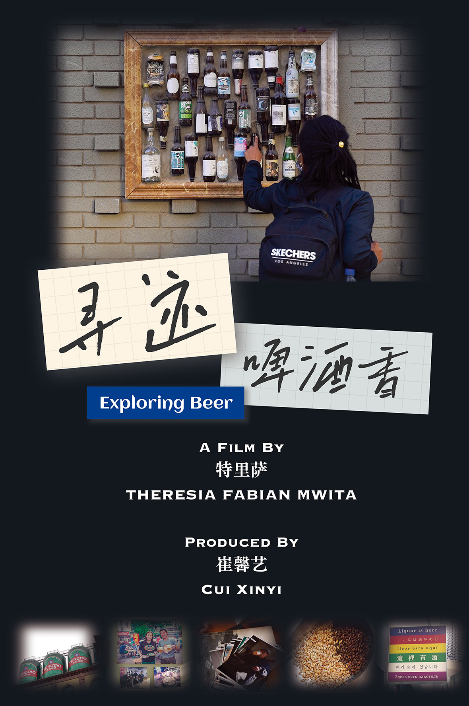

Exploring Beer
Exploring Beer is a documentary about the beer culture of Qingdao, a northern city in China.
The film starts with Tsingtao beer and explores its culture. It introduces the development of the beer culture, the disappearance of traditional beer pubs and the rise of craft beer bars, showing the unique beer culture of Qingdao and the people behind it.
The film was completed in June 2022 and took 15 days overall. Although my role in this project was that of producer (at the request of the event organisers), I actually shot and edited the film on my own.
Play it if you are interested
Get to know the behind-the-scenes story
Our small creative team consists of Theresa who is the main character driving the story forward in the video, Jingyu who is our interpreter and me who works as a producer, cameraman and editor.
During the time, we met so many kind and interesting people who shared their love of beer and Qingdao with us. I can also feel the love of life in them.
To be honest, I once thought beer is nothing more than a kind of drink. However, this experience makes me realize that beer can be a motivation of one's life, a connection between people and a symbol of a city.
Cheers
After the day's shooting, we each bought a bottle of wine to take home.
Teamwork
I was teaching Theresa how to use the camera.
Recording
I was desperate to capture every word of the interviewees for fear of missing something wonderful.
Interviewing
Controlling two cameras while interviewing can be very stressful!
Brewing beer
Rio was brewing beer at his lovely studio.
Communication
This is a cross-culture communication.
Beer in a plastic bag
Beer in a plastic bag is a feature of Qingdao.
The sick duckling
During the shoot, Li Yan's duck got sick and we had to pause to come to the vet.
Qingdao, a city of beer
During the shoot, we came across this wall with the words "Qingdao, a city where you will have no friend if you don't drink".
Shooting beer
The first shot of this video was finished at my accommodation with the help of my roommate. It took us many tries to get a satisfying shot.
Click to contact me or follow my feed